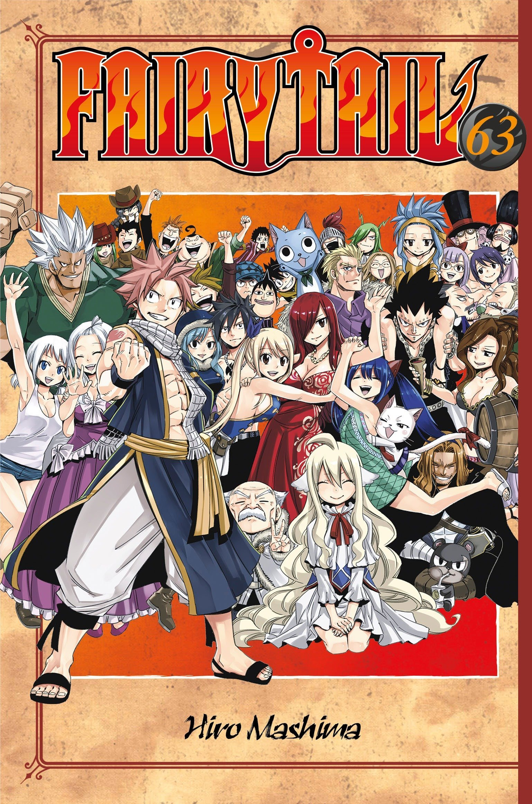

| Cover |
Nombre |
Descripción |
Volúmenes |
|
One Piece |
Una historia épica de piratas, donde narra la historia de "Monkey D. Luffy" quien cuado tenia 7 años, comió accidentalmente una "Akuma no mi"(Futa del diablo) la cual le dio poderes de goma. Por otra parte "Gol D. Roger" conocido como "El rey de los Piratas" quien fuera ejecutado por la Marine, habló antes de morir, acerca de su famoso tesoro "One Piece" escondido en la "Gran line". Esta noticia desato la gran era de la piratas lanzando a incontables piratas a ese lugar, en busca de "One Piece" el tesoro perdido. |
96 |
 |
Naruto |
Pasados dos años y medio de entrenamiento con Jiraiya, Naruto Uzumaki regresa a la aldea oculta de la hoja, donde se reúne con sus viejos amigos y conforma de nuevo el Equipo 7. Debido a la ausencia de Sasuke, aparece un nuevo personaje llamado Sai el cual retoma su lugar. En esta secuela podremos notar como los compañeros de Naruto han madurado con respecto a su desempeño previo, mejorando la mayoría de estos en su nivel. Durante su entrenamiento con Jiraiya, Naruto aprendió a controlar un poco del chakra del Kyubi. |
72 |
|  |
Fairy Tail |
Cuenta la historia de un joven mago llamado Natsu en la búsqueda de su maestro y padre adoptivo Igneel que resulta ser un dragón. Por ello se unió a Fairy Tail, un gremio de magos que es famoso por los destrozos y daños que provocan en diversas ciudades. El mundo de Fairy Tail gira alrededor de los magos, que realizan encargos a cambio de dinero, similar a un cazarecompensas. Natsu conoce a Lucy, una muchacha cuyo sueño era ingresar a un gremio de magos. De ahí en adelante, la historia sigue los movimientos de esta pareja de magos los cuales se ven envueltos en un sin número de aventuras. |
63 |
 |
Bleach |
Kurosaki Ichigo es un estudiante de instituto de 15 años, que tiene una peculiaridad: es capaz de ver, oír y hablar con fantasmas. Un buen día, una extraña chica que viste ropas negras de samurai entra en su cuarto. Se llama Rukia Kuchiki, y es una Shinigami (Dios de la Muerte). Ante la incredulidad de Ichigo, le explica que su trabajo es mandar a las almas buenas o plus a un lugar llamado la Sociedad de Almas, y eliminar a las almas malignas o hollows. Luego junto a Inoue Orihime, Ishida Ury y Sado Yasutora se veran envueltos en diferentes batallas, las cuales iran desarrollando sus habilidades. |
74 |